Research
I work with genomic data and statistics. Most of my projects start with sequencing data (DNA, RNA, small RNA or 16S rRNA) and end with a statistical model that answers a biological question. I have published 14 peer-reviewed articles, 4 of them as first author.
Publications and citations
Articles from the list below; citations from OpenAlex, updated 2026-11-12. The current year is not complete.
Show the numbers as a table
| Year | Articles | Citations |
|---|---|---|
| 2018 | 1 | 0 |
| 2019 | 0 | 0 |
| 2020 | 3 | 10 |
| 2021 | 1 | 4 |
| 2022 | 2 | 9 |
| 2023 | 2 | 15 |
| 2024 | 2 | 19 |
| 2025 | 1 | 28 |
| 2026 | 2 | 53 |
Collaborators
- Genomics, microbiome and transcriptomics
- Drug response (pharma R&D)
- Small RNA in virology
- Other: feline reproduction
63 co-authors on 15 papers and preprints. Bigger dots mean more joint papers; lines join people who share a paper. Hover over or tab to a dot to see the name.
Show the co-authors as a table
| Co-author | Joint papers | Years | Circle |
|---|---|---|---|
| Szyda J | 7 | 2018–2022 | Genomics, microbiome and transcriptomics |
| Mielczarek M | 4 | 2018–2026 | Genomics, microbiome and transcriptomics |
| Guldbrandtsen B | 3 | 2020 | Genomics, microbiome and transcriptomics |
| Wang Y | 3 | 2022–2023 | Genomics, microbiome and transcriptomics |
| Frąszczak M | 2 | 2018–2026 | Genomics, microbiome and transcriptomics |
| Gerosa L | 2 | 2024–2025 | Drug response (pharma R&D) |
| Kwasnik M | 2 | 2023–2024 | Small RNA in virology |
| Luo H | 2 | 2022 | Genomics, microbiome and transcriptomics |
| Niżański W | 2 | 2023–2026 | Other: feline reproduction |
| Prochowska S | 2 | 2023–2026 | Other: feline reproduction |
| Rola J | 2 | 2023–2024 | Small RNA in virology |
| Rozek W | 2 | 2023–2024 | Small RNA in virology |
| Socha W | 2 | 2023–2024 | Small RNA in virology |
| Suchocki T | 2 | 2020–2021 | Genomics, microbiome and transcriptomics |
| Wang K | 2 | 2022 | Genomics, microbiome and transcriptomics |
Plus 48 co-authors with one joint paper.
What I do
Sequencing data analysis. I analyse whole-genome, targeted and RNA sequencing data, including single-cell RNA-seq, small RNA-seq and 16S rRNA amplicons. I have built and run pipelines for variant calling, differential expression and small RNA annotation in many species: human cancer cells, cattle, chickens, cats, and dog cells infected with influenza A virus.
Multi-omics and microbiome data. I combine data types when one of them cannot explain a process alone, for example host RNA-seq with the gut microbiome. I also analyse mass spectrometry phosphoproteomics.
Statistical modelling and machine learning. I fit dose-response models to high-throughput drug screens, including drug combinations, run association studies with mixed models, and use machine learning for classification, such as separating true from false SNP calls or predicting semen quality after freezing.
Analysis choices and reproducibility. Reference genomes, pipelines and parameters can change the results of an analysis. I test how much they do, for example the effect of the reference transcriptome on cancer RNA-seq, and I package repeated analyses as R libraries and workflows.
Peer-reviewed articles
Click a paper to see the question, the methods and a figure.
2026A proof-of-concept study: reference transcriptome choice as a hidden analytical variable in breast cancer RNA-seq analysisInternational Journal of Molecular Sciences 27(21):9398
Tests whether the choice between the GRCh37 and GRCh38 reference transcriptomes changes the list of differentially expressed genes in breast cancer RNA-seq data.
Methods
- Quantification with kallisto against GRCh37 and GRCh38
- Differential expression with DESeq2 under four analysis approaches
2026Motile sperm head morphometry in relation to sperm kinematics and freezability in catsTheriogenology 255:117839
Asks whether the head shape of motile sperm cells relates to their movement and to how well semen survives freezing in domestic cats.
Methods
- Processing of single-cell kinematics and morphometry from a CASA system
- PCA and clustering of morpho-kinetic subpopulations
- Classification trees predicting post-thaw semen quality
2025Cooperation between the Hippo and MAPK pathway activation drives acquired resistance to TEAD inhibitionNature Communications 16:1743
Describes how cancer cells become resistant to TEAD inhibitors through joint activation of the Hippo and MAPK pathways.
Methods
- Processing of high-throughput drug screens with the gDR R package
- Dose-response fitting with four-parameter logistic models
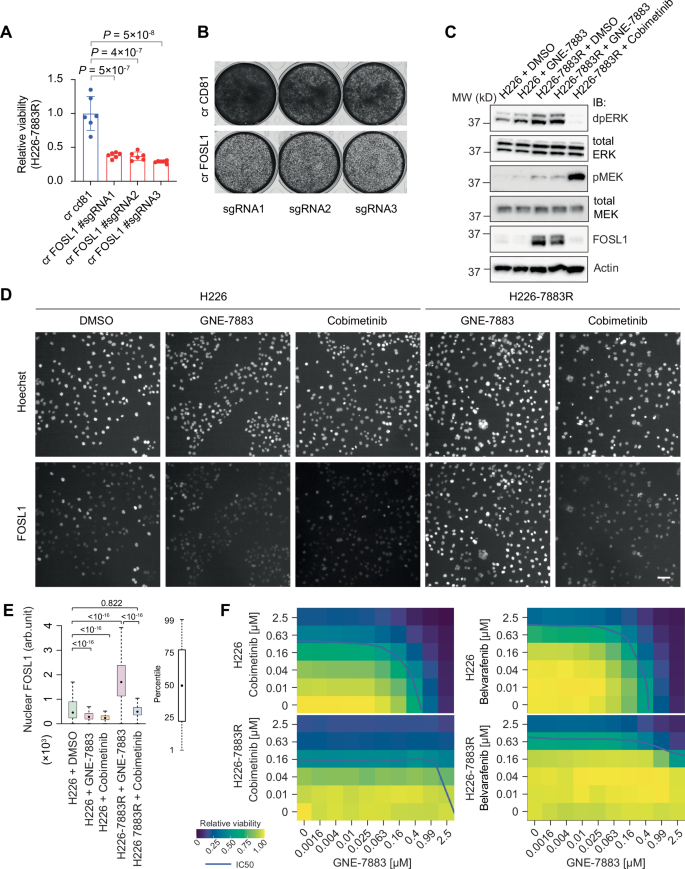
2024Profiling of snoRNAs in exosomes secreted from cells infected with influenza A virusInternational Journal of Molecular Sciences 26(1):12
Characterises small nucleolar RNAs carried in exosomes released by cells infected with influenza A virus.
Methods
- Small RNA-seq trimming (Trimmomatic) and alignment (BWA-MEM)
- snoRNA annotation with Ensembl and Rfam
- Differential expression with DESeq2
- Interaction networks from RNAInter
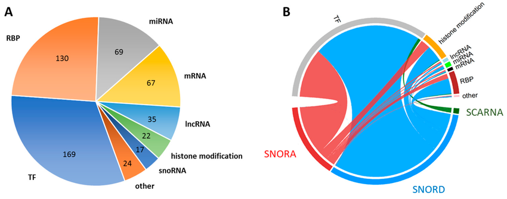
2024Computational modeling of drug response identifies mutant-specific constraints for dosing panRAF and MEK inhibitors in melanomaCancers 16(16):2914
Uses drug response modelling to find dose ranges of panRAF and MEK inhibitor combinations that work for specific melanoma mutations.
Methods
- Processing of high-throughput combination screens with the gDR R package
- Dose-response fitting and Bliss synergy scores
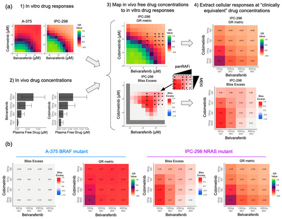
2023Feline sperm head morphometry in relation to male pedigree and fertilityTheriogenology 208:119–125
Compares sperm head shape between pedigree and non-pedigree cats and relates it to fertility.
Methods
- PCA and k-means clustering of sperm subpopulations
- Group comparisons with ANOVA or Kruskal–Wallis tests
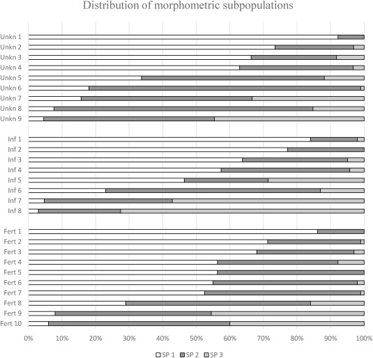
2023Protein-coding region derived small RNA in exosomes from influenza A virus–infected cellsInternational Journal of Molecular Sciences 24(1):867
Looks at small RNA fragments that come from protein-coding genes and are packed into exosomes during influenza A infection.
Methods
- Alignment to the dog and influenza genomes with BWA-MEM
- Differential expression with DESeq2
- Functional annotation with PANTHER and STRING
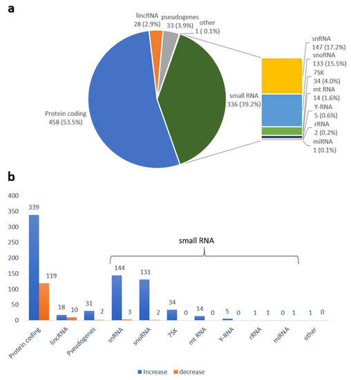
2022Host transcriptome and microbiome interactions in Holstein cattle under heat stress conditionFrontiers in Microbiology 13:998093First author
Links gene expression in the host to gut microbiota composition in dairy cows under heat stress.
Methods
- Host RNA-seq alignment with STAR
- 16S rRNA processing with QIIME2 and DADA2
- Co-expression modules (WGCNA) linked to bacterial taxa
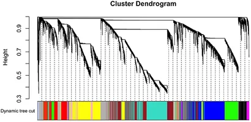
2022Fecal microbiota and their association with heat stress in Bos taurusBMC Microbiology 22:171First author
Identifies gut bacteria whose abundance is associated with heat stress indicators in dairy cattle.
Methods
- 16S rRNA quality control and denoising (DADA2, QIIME2)
- Alpha and beta diversity, PERMANOVA
- Differential abundance with edgeR
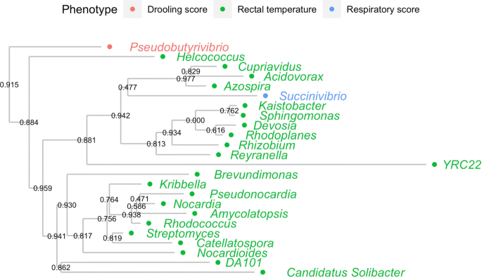
2021SNP prioritization in targeted sequencing data associated with humoral immune responses in chickenPoultry Science 100(11):101433
Ranks variants from targeted sequencing by their likely link to antibody response in chickens.
Methods
- Alignment with BWA-MEM and variant calling with GATK
- Variant annotation with Ensembl VEP
- Association tests and linkage disequilibrium
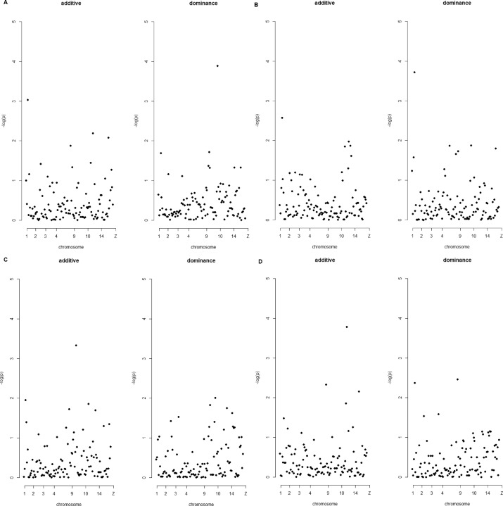
2020Extraordinary command line: basic data editing tools for biologists dealing with sequence dataThe Open Bioinformatics Journal 13(1):137–145
A tutorial on Unix command-line tools for editing FASTA, FASTQ and GFF files.
Methods
- sed, awk, grep and Bash scripting
2020The application of deep learning for the classification of correct and incorrect SNP genotypes from whole-genome DNA sequencing pipelinesJournal of Applied Genetics 61(4):607–616
Trains neural networks to separate true from false SNP calls in whole-genome sequencing data.
Methods
- Quality features extracted from alignments
- Deep learning in Keras and TensorFlow
- ROC curves and cross-validation
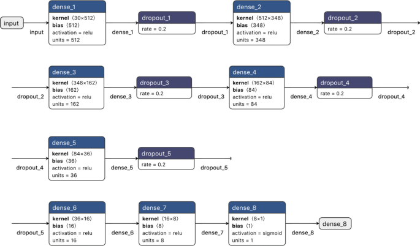
2020Patterns of DNA variation between the autosomes, the X chromosome and the Y chromosome in Bos taurus genomeScientific Reports 10:13641First author
Compares the amount and type of DNA variation on autosomes and sex chromosomes in cattle whole-genome data.
Methods
- Alignment with BWA-MEM, variant calling with GATK and SAMtools
- Annotation with snpEff and SIFT4G
- Diversity statistics with VCFtools
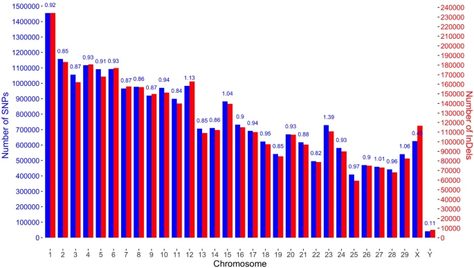
2018Identification and annotation of breed-specific single nucleotide polymorphisms in Bos taurus genomesPLOS ONE 13(6):e0198419First author
Finds SNPs specific to individual cattle breeds and describes the genes and traits they affect.
Methods
- Alignment with BWA-MEM, filtering with VCFtools
- Functional analysis with KOBAS, OMIA and Cattle QTLdb
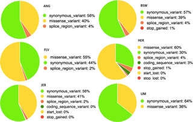
Preprints
2023Genome-wide association study of heat stress response in Bos taurusbioRxivFirst author
Conference talks and posters are listed in the CV.